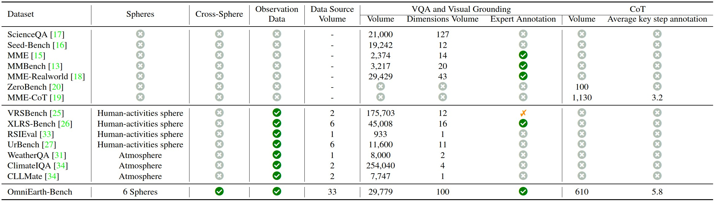

Benchmark Results (VQA)
| Method | Cross-sphere | Atmosphere | Lithosphere | Oceansphere | Cryosphere | Biosphere | Human-activities | Avg. |
|---|---|---|---|---|---|---|---|---|
| Claude-3.7-Sonnet | 30.68 | 24.72 | 28.15 | 23.12 | 54.46 | 31.21 | 11.18 | 29.07 |
| Gemini-2.0 | 16.93 | 20.83 | 38.94 | 16.94 | 58.52 | 20.83 | 23.74 | 28.10 |
| GPT-4o | 0.04 | 9.64 | 12.80 | 13.35 | 37.48 | 1.97 | 2.76 | 11.15 |
| InternVL3-72B | 19.19 | 33.98 | 23.39 | 20.22 | 74.56 | 31.99 | 29.46 | 33.26 |
| InternVL3-7B | 42.85 | 30.10 | 37.47 | 20.28 | 49.27 | 28.74 | 23.18 | 33.13 |
| LLaVA-Onevision-7B | 19.26 | 33.69 | 28.72 | 24.54 | 46.40 | 37.31 | 30.62 | 31.51 |
| InternLM-XComposer-2.5-7B | 19.78 | 17.45 | 28.88 | 21.06 | 40.04 | 30.67 | 24.76 | 26.09 |
| Qwen 2.5-VL-7B | 9.85 | 9.25 | 18.65 | 13.95 | 17.85 | 10.94 | 6.23 | 12.39 |
| Qwen 2.5-VL-72B | 3.92 | 4.82 | 22.43 | 16.27 | 5.88 | 14.91 | 8.63 | 10.98 |
Benchmark Coverage
OmniEarth-Bench evaluates models over six spheres and cross-sphere interactions:
Data & Tasks
- Observations: Satellite imagery & in-situ measurements
- Annotations: 2–5 domain experts / sphere + 40 crowd-workers
- Task types: QA, VQA, captioning, retrieval, spatio-temporal reasoning, chain-of-thought, and more
- Total evaluation dimensions: 100
Dataset Overview

Fig 1. Overview of OmniEarth-Bench.
We introduce OmniEarth-Bench, the first comprehensive multimodal benchmark spanning all six Earth-science spheres (atmosphere, lithosphere, oceansphere, cryosphere, biosphere, human-activities) and cross-sphere scenarios with one hundred expert-curated evaluation dimensions. Leveraging observational data from satellite sensors and in-situ measurements, OmniEarth-Bench integrates 29 779 annotations across four tiers: perception, general reasoning, scientific-knowledge reasoning, and chain-of-thought (CoT) reasoning.
- Comprehensive Evaluation Across All Six Spheres. 58 practical evaluation dimensions that significantly surpass prior benchmarks.
- Pioneering Cross-Sphere Evaluation Dimensions. Addresses complex tasks such as disaster prediction and ecological forecasting.
- CoT-Based Reasoning Evaluations. Establishes, for the first time, CoT-based assessments tailored to Earth-science reasoning.
Dataset
Comparison & Examples
Fig 2. Comparison with existing benchmarks.
OmniEarth-Bench defines tasks across four hierarchical levels (L1–L4): 7 L1 spheres, 23 L2 dimensions, 4 L3 dimensions and 103 expert-defined L4 subtasks with real-world applicability.

Fig 3. Representative L4 subtasks from each sphere.
Benchmark Results
For detailed results on every dimension, please refer to the paper appendix.
Fig 4. Experimental results on each sphere of VQA tasks.
Following MME-CoT, precision, recall and F1 are reported on CoT tasks:
Fig 5. CoT performance on OmniEarth-Bench.
Benchmark Quickstart
Please refer to evaluation
Citation
@article{wang2025omniearth,
title = {OmniEarth-Bench: Towards Holistic Evaluation of Earth's Six Spheres and Cross-Spheres Interactions with Multimodal Observational Earth Data},
author = {Fengxiang Wang and Mingshuo Chen and Xuming He and others},
journal = {arXiv preprint arXiv:2505.23522},
year = {2025}
}